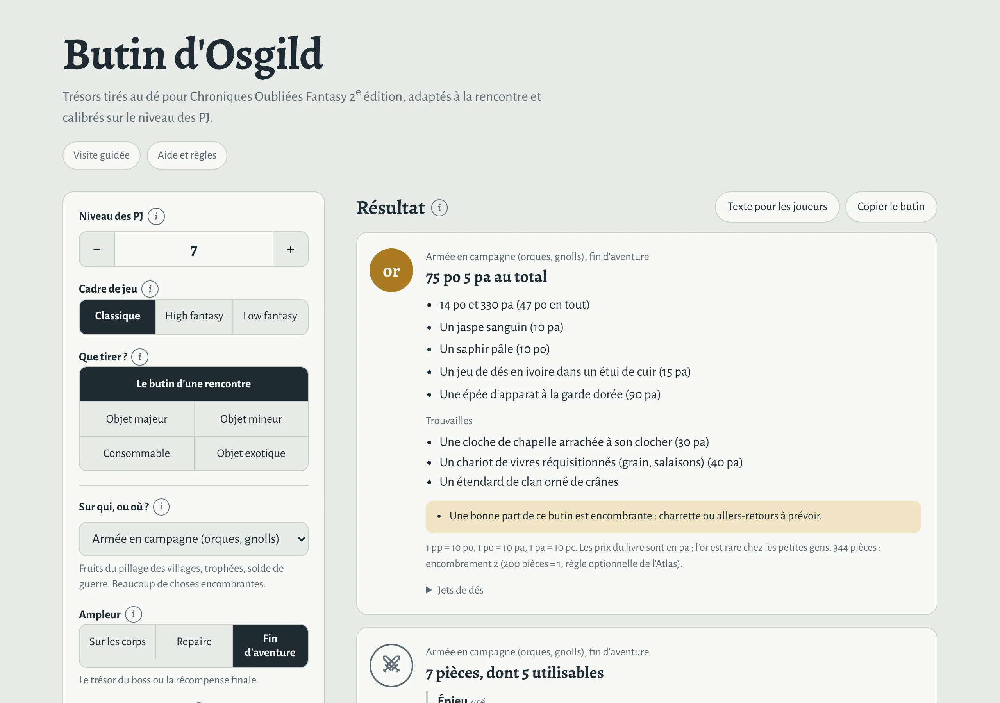
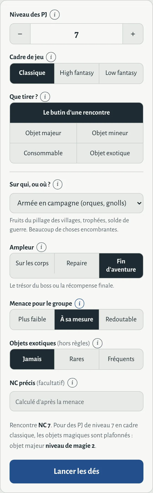
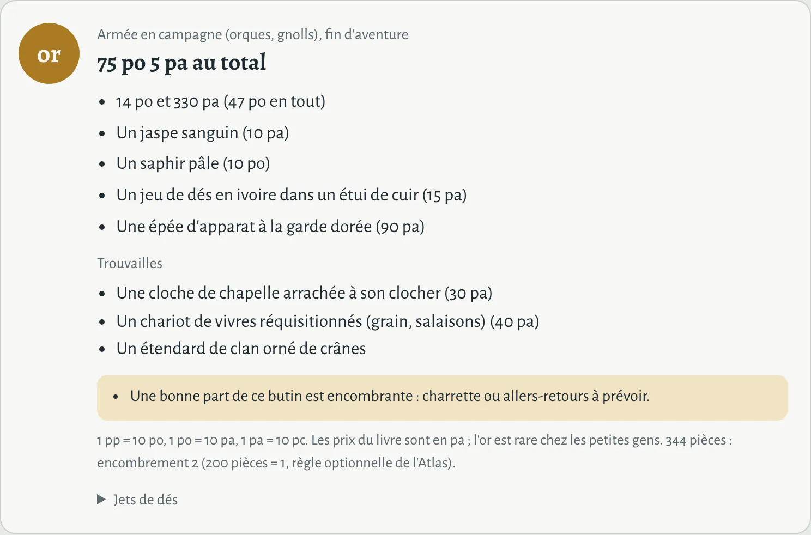
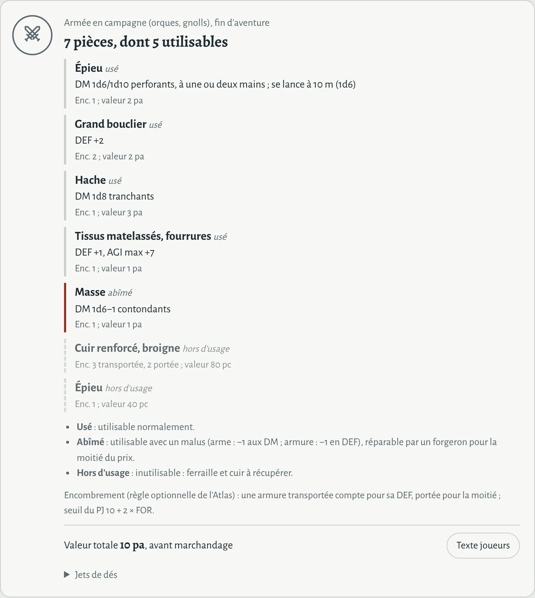
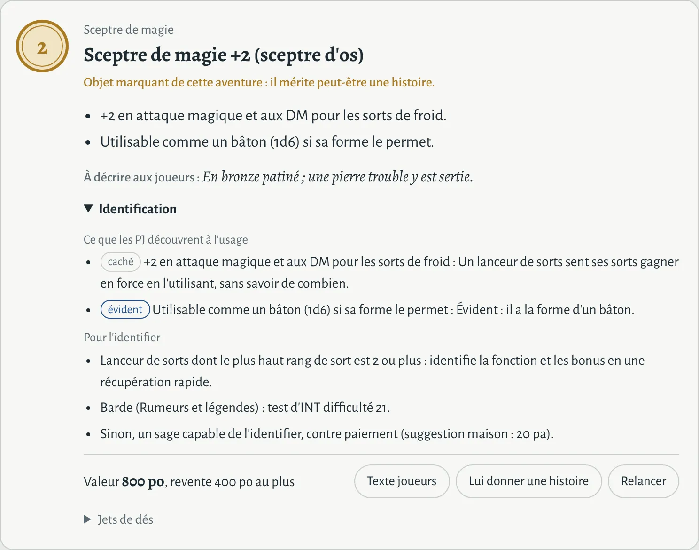
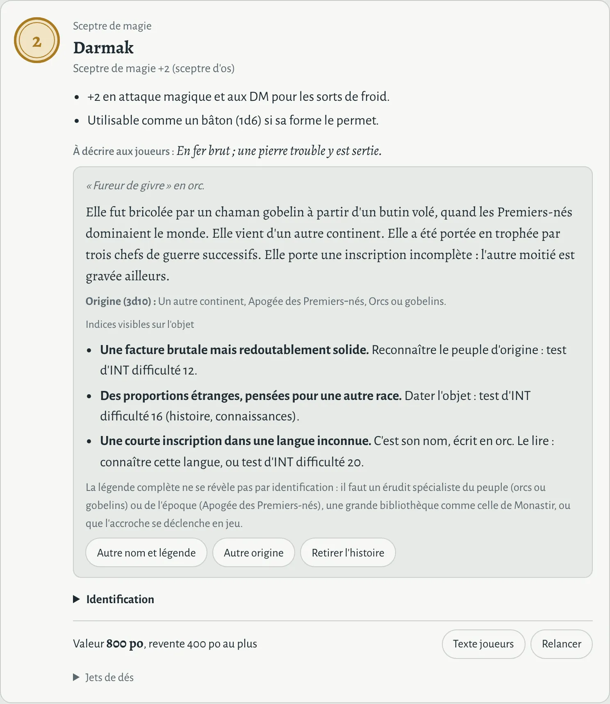
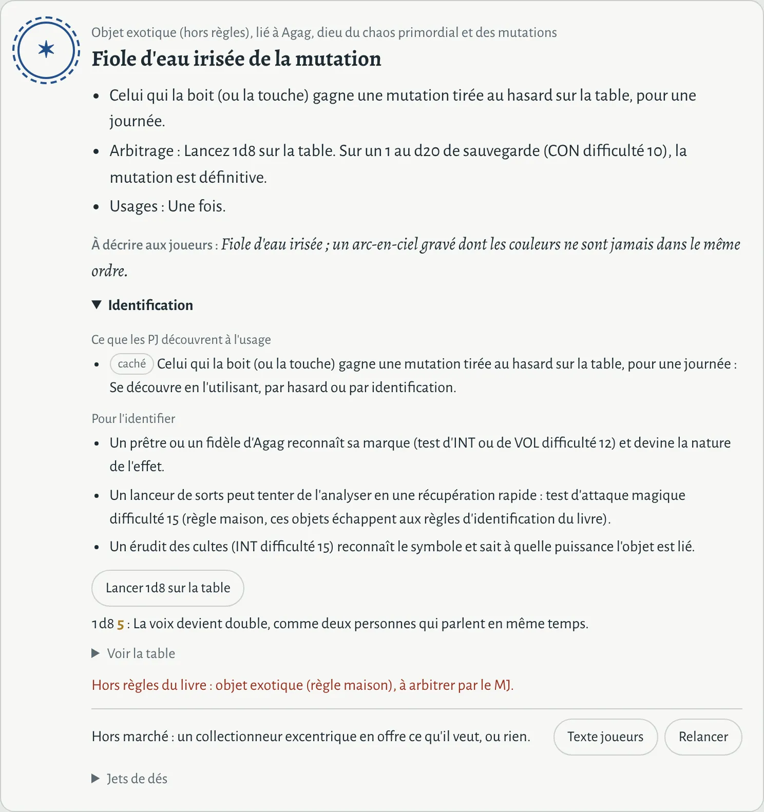

En une minute
- Indique le niveau des PJ et le cadre de jeu.
- Choisis ce que tu veux tirer : le butin d'une rencontre, ou un objet seul.
- Pour une rencontre, dis sur qui ou où les PJ fouillent, l'ampleur et la menace.
- Lance les dés. Chaque carte du résultat est prête à jouer : statistiques, description pour les joueurs, valeur, détail des jets.


Chaque réglage a un petit i : un clic ouvre une explication courte et un lien vers la section qui va bien ici. Le bouton « Visite guidée », en haut du générateur, refait le tour de l'écran pas à pas.
Que tirer ?
- Le butin d'une rencontre
- Tout ce que les PJ ramassent : l'argent, les gemmes et objets d'art, les trouvailles, l'équipement récupérable et, parfois, des objets magiques. C'est le mode à utiliser à la table.
- Objet majeur
- Un objet permanent au niveau de magie le plus élevé que le livre autorise pour ce niveau et ce cadre. Pour une récompense, un trésor de quête, un objet de boss.
- Objet mineur
- Un objet permanent lu dans la colonne niveau ÷ 2 de la même table : un bon objet, mais pas le plus puissant.
- Consommable
- Une potion, un parchemin ou des projectiles magiques.
- Objet exotique
- Règle maison : un objet étrange lié à une divinité ou une puissance d'Osgild. Voir Objets exotiques.
Pour un objet seul, tu peux restreindre la catégorie (arme, armure, objet de pouvoir…) et en tirer jusqu'à huit d'un coup.
Les réglages


Niveau des PJ et cadre de jeu
Le livre fixe, pour chaque niveau et chaque cadre, la puissance maximale d'un objet magique majeur. Le générateur la lit directement : un objet majeur prend la colonne du niveau, un objet mineur la colonne niveau ÷ 2 (arrondi en dessous). « C » signifie consommables seulement, « 0 » aucun objet magique.
Le livre plafonne aussi le total porté par un PJ : Le générateur l'affiche sous le formulaire ; à toi de le surveiller sur la durée.
Le niveau des PJ ne change pas l'argent : la bourse dépend de qui la porte, donc du NC de la rencontre.
Sources : sur qui, ou où ?
Chaque source décrit un type d'adversaire ou de lieu. Elle règle combien d'argent il y a (richesse), la part de magie, les gemmes, l'équipement porté (armes, armures, état), les trouvailles typiques, les catégories d'objets magiques probables et parfois une règle spéciale (fausse monnaie, or des fées, composants à prélever…). Des loups n'ont pas de bourse ; une tour de sorcier regorge de parchemins.
Richesse : multiplicateur du barème d'argent pour chaque ampleur. Magie : multiplicateur des chances d'objets magiques. Exotisme : multiplicateur des chances d'objet exotique.
Ampleur
- Sur les corps
- Ce que les adversaires ont sur eux : un peu d'argent, leurs armes et armures, parfois une potion. Le nombre d'adversaires compte ici : plus ils sont nombreux, plus il y a de pièces (× 0,7 + 0,1 par adversaire, au plus × 2), d'équipement et de chances de magie (au plus × 2).
- Repaire
- Le magot accumulé dans leur cachette : nettement plus d'argent, des gemmes, des objets d'art, de l'équipement stocké, et une vraie chance d'objet magique.
- Fin d'aventure
- Le trésor du boss ou la récompense finale : deux fois l'argent d'un repaire, au moins une gemme si la source en a, et un objet majeur garanti si la source a de la magie (un objet mineur sinon). Cet objet est signalé comme candidat à une histoire.
Menace et NC précis
Le NC (niveau de la rencontre) décide de l'argent, des gemmes et de l'équipement stocké. Sans NC précis, il se déduit de la menace :
- Plus faible que le groupe : NC = niveau des PJ − 2 ;
- À sa mesure : NC = niveau des PJ ;
- Redoutable : NC = niveau des PJ + 2. En fin d'aventure, l'objet majeur garanti gagne alors un niveau de magie.
Si tu connais le NC exact (celui du bestiaire, ou celui d'un groupe : douze gnolls et leur chef font une rencontre NC 7), saisis-le dans NC précis : il remplace la menace, qui se grise. « Effacer » revient au calcul par la menace.
Le NC ne lève jamais le plafond de magie : même face à un dragon, un groupe de niveau 3 ne trouve pas d'objet de niveau de magie 5. C'est la règle du livre.
Lire le résultat
Tout est en vue MJ : les cartes disent ce que l'objet fait vraiment, y compris ce que les joueurs ne savent pas encore. Chaque carte se termine par « Jets de dés », qui détaille chaque tirage pour vérifier ou arbitrer.
Argent et équipement


- Les pièces sont réparties en pp, po, pa et pc selon la source : des gobelins ont surtout du cuivre, un antre de dragon ou une tour de sorcier davantage d'or. Rappel : 1 pp = 10 po, 1 po = 10 pa, 1 pa = 10 pc ; les prix du livre sont en pa.
- Les gemmes et objets d'art ont leur valeur entre parenthèses.
- Les trouvailles sont propres à la source : un carnet de voyage, une lanterne cabossée, une botte d'aventurier… certaines valent quelque chose, d'autres sont des accroches.
- Les encadrés dorés signalent les règles spéciales (fausse monnaie, or des fées, composants à prélever) et l'encombrement des pièces au-delà de 200.


Chaque pièce a ses statistiques du livre (DM, DEF, AGI max, portée), son encombrement (règle optionnelle de l'Atlas) et un état qui change sa valeur et parfois son usage :
Objet magique


- Le sceau donne le niveau de magie (NM). Un sceau fin marqué « C » est un consommable, un sceau en pointillés bleus ✶ un objet exotique.
- Les effets sont prêts à jouer : bonus, propriétés, sort reproduit avec son rang, sa voie et son profil, utilisations par jour.
- « À décrire aux joueurs » : son apparence, sans rien révéler.
- La valeur suit le livre (NM² × 200 po ; rang² × 50 pa pour une potion ou un parchemin) ; la revente se fait à moitié prix au plus.
- Une potion a un bouton pour l'effet secondaire (2d6) si le buveur a déjà une potion active et rate son test de CON.
Identification
La section « Identification » dit ce que les PJ découvrent seuls et comment en savoir plus :
- chaque effet est marqué évident (un bonus en attaque se sent au premier coup) ou caché (une résistance ne se révèle que face au danger) ;
- les moyens d'identifier sont ceux du livre, avec les difficultés calculées pour cet objet : un lanceur de sorts dont le plus haut rang de sort atteint le niveau de magie l'identifie en une récupération rapide ; un barde (test d'INT, 25 − 2 × NM, au moins 5) a pu en entendre parler ; un maître d'armes (test d'INT, 10 + 2 × NM) estime une arme en la maniant ; un forgesort (test d'INT, 5 + 5 × rang) analyse une potion ; un lanceur de sorts de la même famille lit un parchemin sans test ; sinon, un sage.
Histoire d'un objet


Par défaut, un objet n'a pas d'histoire : la plupart des objets magiques sont des outils. Pour ceux qui comptent, le bouton « Lui donner une histoire » tire son origine sur la table 3d10 du livre (provenance, époque, peuple), puis génère un nom propre et une légende cohérents avec cette origine, et les indices visibles sur l'objet (poinçon nain, motif impérial, odeur de soufre…) que les PJ peuvent remarquer. « Autre nom et légende » garde l'origine, « Autre origine » repart de zéro, « Retirer l'histoire » rend l'objet anonyme. L'objet majeur d'une fin d'aventure est signalé comme candidat.
Le générateur évite de resservir un nom ou une phrase déjà sortis dans ton historique.
Objets exotiques


Règle maison, hors règles du livre. Un objet exotique est lié à une divinité ou une puissance d'Osgild (divinités de l'Atlas, Puissances, saisons, Seigneurs des animaux, Roi-Sorcier, ombre féérique). Son domaine donne le ton : lumineux, neutre, sombre ou fou. Il n'apporte pas de bonus chiffré permanent en combat : c'est un effet narratif, à double tranchant ou inquiétant, avec une contrepartie et une fréquence d'usage. Un objet sur deux a en plus un caprice. Les objets dangereux le montrent (aura, odeur, gravure).
On les obtient en mode « Objet exotique » (en choisissant la divinité, ou au hasard), ou dans le butin d'une rencontre si tu les actives : Jamais (par défaut), Rares ou Fréquents. Les sources étranges (fées, tour de sorcier, tombeau, culte) en donnent plus souvent ; les chances exactes sont dans Probabilités. Il y en a .
Copier, relancer, retrouver
- Texte joueurs (sur une carte) ou Texte pour les joueurs (tout le butin) copie ce que les PJ voient et ce qu'ils ont découvert, sans règles cachées ni notes MJ. Prêt à coller dans un message.
- Copier le butin copie la vue MJ complète, en texte.
- Relancer retire un objet seul, avec les mêmes réglages.
- Butins précédents garde les 20 derniers tirages, histoires et relances comprises. « Vider l'historique » les efface.
Ce qui vient du livre
Ces règles sont celles du livre de base de Chroniques Oubliées Fantasy 2e édition (chapitres « Objets magiques » et « Équipement »), appliquées telles quelles :
- la table Puissance d'un objet magique majeur par niveau et par cadre, et le plafond de niveaux de magie porté par PJ ;
- la valeur des objets (NM² × 200 po) et des potions et parchemins (rang² × 50 pa) ;
- les armes et armures magiques : bonus, propriétés tirées sur les tables et leur coût en niveaux de magie, propriétés doublées et capacités spéciales ;
- les objets de pouvoir qui reproduisent une capacité d'une voie, les objets de puissance, les baguettes et grimoires ;
- les potions (type sur d6, liste par rareté) et leur effet secondaire (2d6) ; les parchemins (rang et voie) ;
- l'identification : lanceur de sorts de rang suffisant, barde, maître d'armes, forgesort, sage ;
- la table d'origine des objets (3d10 : provenance, époque, peuple) ;
- les statistiques et prix des armes et armures, l'objet de qualité, et la monnaie (1 pp = 10 po = 100 pa = 1 000 pc) ;
- l'encombrement, règle optionnelle de l'Atlas d'Osgild.
Deux choix d'interprétation : le rang d'une potion dont le sort n'apparaît pas dans les voies du livre de base est estimé (pour sa valeur et son identification), et les potions et parchemins de « Nécromancien » sont rattachés au profil Sorcier.
Règles maison, et pourquoi
Le livre dit quelle puissance un objet peut avoir et combien un PJ devrait en porter ; il ne dit pas ce qu'on trouve dans la bourse d'un bandit. Tout ce qui suit comble ce vide. C'est ajustable dans les fichiers du dépôt.
- Sources, ampleur, menace
- Inspiré des types de trésor d'AD&D et des trésors individuels et de repaire de D&D 5e, pour que le butin colle à la scène plutôt qu'au seul niveau des PJ.
- L'argent dépend du NC, pas du niveau des PJ
- C'est l'adversaire qui porte la bourse. Le barème est calibré sur les prix de COF (une épée longue vaut 6 pa, un cheval de selle 100 pa) pour que l'or reste désirable : voir le barème.
- La magie reste plafonnée par le niveau des PJ
- La source et l'ampleur décident si un objet tombe ; le livre décide de quelle puissance. On garde ainsi l'équilibre prévu par le livre.
- Un objet majeur a de l'allure
- Un objet majeur n'est jamais un simple objet de compétence, ni un objet de puissance sous le niveau de magie 3 ; il peut recevoir un second pouvoir. Une arme ou une armure garantie en fin d'aventure a toujours au moins une propriété, et l'objet gagne un niveau de magie si la rencontre était redoutable.
- Des objets cohérents avec leur source
- Sept fois sur dix, une arme ou une armure magique est une pièce que la source porte vraiment (une arbalète chez les gardes, une hache chez les orques). Les objets de pouvoir sont tirés dans les profils de la source (sorts de prêtre dans un temple), et les capacités inutilisables en objet (compagnons, traits de classe, bonus de caractéristique) sont écartées.
- États de l'équipement
- Récupérer l'équipement est une source de revenus classique, mais pas une fortune : la plupart des armes ramassées sont usées ou abîmées, et valent moins.
- Gemmes, objets d'art et trouvailles
- Pour varier le butin et donner des accroches. Leur valeur suit le NC (d8 + NC ÷ 2 sur la table de valeurs).
- Les histoires à la demande
- Un nom et une légende pour chaque épée +1 diluent ce qui compte. Le MJ choisit quels objets en méritent une ; les niveaux de magie élevés ont des légendes plus prestigieuses.
- Identification : compléments
- Le prix d'un sage (10 pa par NM) et l'indice en goûtant une potion sont des suggestions maison, tout comme les tests propres aux objets exotiques.
- Objets exotiques
- Pour les objets qui font une histoire à eux seuls, à la manière des artefacts farfelus ou inquiétants d'autres jeux, mais ancrés dans les divinités et puissances d'Osgild. Désactivés par défaut.
Probabilités et barèmes
Ces tableaux sont calculés en direct à partir des fichiers de données du générateur : ils sont toujours à jour.
Argent
Montant moyen avant le coefficient de richesse de la source, pour 3 adversaires « sur les corps ». Le tirage réel varie de 0,3 à 1,7 fois la moyenne (2d6 ÷ 7).
Formules : sur les corps 3 × (NC + 1)1,3 × (0,7 + 0,1 × adversaires, au plus 2) ; repaire 8 × (NC + 1)1,7 ; fin d'aventure 16 × (NC + 1)1,7 ; le tout en pa, multiplié par la richesse de la source.
Objets magiques
Chances d'obtenir au moins un objet permanent, par source et par ampleur (3 adversaires sur les corps), et nombre moyen de consommables. La puissance de l'objet suit ensuite la table du livre.
Base : sur les corps, objet mineur 5 % (× 0,5 + adversaires ÷ 4, au plus × 2) ; repaire, objet majeur 12 %, sinon mineur 30 % ; fin d'aventure, objet majeur garanti (si magie ≥ 0,5, mineur sinon) plus 30 % d'un objet mineur. Tout est multiplié par la magie de la source.
Catégories d'objets
Quand la catégorie est « Au hasard », le type d'objet est tiré selon ces poids. Dans le butin d'une rencontre, chaque source a ses propres poids (plus de parchemins chez un sorcier, plus d'armes chez des soldats).
Objets exotiques
Chance qu'un butin de rencontre contienne un objet exotique, selon le réglage.
Base « Rares » : 2 % sur les corps, 6 % en repaire, 12 % en fin d'aventure, × 3 en « Fréquents », × l'exotisme de la source, plafonné à 90 %.
Données et versions
Tout fonctionne dans ton navigateur : aucun compte, aucun serveur. Tes derniers réglages et tes 20 derniers butins sont gardés dans le stockage local du navigateur (ils restent sur cet appareil, et disparaissent si tu effaces les données du site).
Le générateur est en bêta : liste des nouveautés, signaler un problème ou proposer une idée, code source.